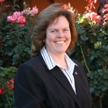
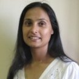

About
Background
In 2015 Dr Colleen Henning arranged for Peter Bohacek to visit South Africa and run workshops on Direct Measurement Videos. We used the visit as an opportunity to run a conference and workshop in Johannesburg and Cape Town. To make the event comprehensive we included a number of talks related to not only the teaching of physics but also about education in general. There was overwhelming feedback that it should be an annual event.
Goal
We want to bring together like-minded educators who want to be part of building a strong community of practitioners that actively engage in sharing ideas and learning more about physics research, how best to teach physics, the impact of physics in society and the careers that are accessible to physicists.
2016 - Computational Physics
This year we have a more of a theme but have worked hard to keep the balance between classroom-focused, hands-on workshops and more general talks.
Our theme, fear not - NO programming experience required, is computational physics. All of the speakers are passionate about physics education, not just physics, and the talks are aimed at high school teachers.
Computers are more than just fancy calculators, they are tools that are becoming a fundamental part of doing physics - they enable physicists at all levels to create, test and explore models; visualise systems and processes; and solve problems that don't yet have analytical solutions.
Our line-up includes a hands-on workshop from Rhett Allain that will introduce us to easy-to-use tools to bring computational physics and visualisations into the classroom.
We'll build on this with Trisha Salagaram talking about how computational physics has become a pillar of modern physics and her work on researching how it needs to be integrated into undergraduate physics.
To extend our awareness of new physics research we'll move beyond the school and university classrooms and learn about some really exciting, cutting-edge research into galaxies that uses computational techniques for simulations from Romeel Davé.
Physicists learn analytical-, quantitative- and technical skills that are widely applicable and Carolina Ödman-Govender will talk about how being a physicist has enabled her to move out of academia into an exciting financial technology company.
Keeping up with the developments in Physics Education Research, like the emphasis on the integration of computational physics and visualisation, leads into the talk by Saalih Allie on what other topics are emerging that in PER that we should be aware of.
We'll wrap up with a summary of some of the more emergent techniques that are being used in education by Megan Beckett but specifically integrated into the teaching of electric circuits by Adam Reynolds.
In between all of that, we'll have a spit braai, an update on the latest results on exoplanets by Kosma von Maltitz and spend another evening observing.
Location
St Johns College, St David Road, Houghton, 2198. Johannesburg,
Speakers
-

Day 1 @ 9h15
Welcome address
Dr Colleen Hennnig @colleen_henning
Colleen began her career in particle physics. While tutoring university students and teaching part-time as a postgraduate, she discovered her talent for teaching and her love of making a difference to others. As a science teacher in South Africa, she works with students from all kinds of backgrounds and makes a point of teaching tolerance in her classes by encouraging group work and discussions. Her students receive awards at international science fairs. One student team won the CERN Beam Line for Schools competition and was invited to conduct experiments on site at CERN. Colleen is very active in online communities and has authored open source text books. She shares her teaching materials and experience. She organised the first South African physics teacher conference in 2015 and is working towards founding an association of science teachers. She has also contributed to textbooks which are distributed free of charge to public schools in South Africa.
-
 Day 1 @ 9h30
Day 1 @ 9h30
TBC
???
------
-
Day 1 @ 10h00
Simulations of Galaxy Evolution
Professor Romeel Davé LinkedIn
I was born in California and grew up mostly in the U.S. with a few early years in India. I received my bachelor’s in Physics from Berkeley, a Master’s in Physics from Caltech, and a Ph.D. in Astronomy from U.C. Santa Cruz. I was awarded a Lyman Spitzer postdoctoral fellowship at Princeton, followed by a Hubble Fellowship that I took to the University of Arizona. After three years I was demoted to faculty at Arizona, where I remained for 9 years until moving to Cape Town in 2013. I am now the South African Research Chair in Cosmology with Multi-wavelength Data, which I split between the University of the Western Cape, and the South African Astronomical Observatories, and the African Institute for Mathematical Sciences. I study computational galaxy formation and cosmology, which is one of the fastest-growing areas of astrophysics in the world today. My research aims to answer a fundamental question of our existence: Why does the Universe look the way it does?
-
Day 1 @ 12h00
Geography Teachers' Association
Bridget Fleming
Bridget Fleming is a passionate advocate for using Geotechnologies in the classroom. She was the IEB geography national examiner, sat on the UMALUSI adult education curriculum advisory board for geography and has authored a number of textbooks and digital classroom resources. She has recently returned to the classroom after a few years of running a start-up GIS company where she was involved in Geospatial education and training. She is Co-chair of Geo4All Africa, is on the National GISSA council (Education) and is the Chair of the Southern African Geography Teachers’ Association (SAGTA). She is presently HOD Geography at St John’s College.
-
Day 1 @ 14h00
Computational Physics for High School Teachers
Associate Professor Rhett Allain @rjallain
Rhett Allain is an associate professor of physics at Southeastern Louisiana University and the author of the Wired magazine science blog Dot Physics. He received his Ph.D. from North Carolina State University in 2001 and works in the field of physics education research. In his blog, Dot Physics, Allain discusses physical concepts, answers questions related to physics and math, and debunks questionable physical claims. Many of his posts are supported by experiments, calculations and models. Recently, he has analyzed the physics behind the Angry Birds Space video game and behind a now-debunked video which purported to show a man flying with home-made wings. He has also criticized television shows, including Fight Science, that perform poorly controlled experiments which are presented as scientific.
-
Day 1 @ 17h30
Exo-planets
Kosma von Maltitz @kosmavm
Kosma has a MSc in Astrophysics and Space Science. At Siyavula she coordinates the EdTech Production Team and creates Physics content. Kosma also presents shows at the Iziko Planetarium and does Astronomy outreach whenever she gets a chance.
-
Day 2 @ 9h30
Once a physicist, always a physicist and the opportunities outside of academia
Dr Carolina Ödman-Govender @carolune
------
-

Day 2 @ 10h30
The importance of computational physics, it's key role in research and what this means for teaching physics
Dr Trisha Salagaram LinkedIn
Bio pending
-
Day 2 @ 12h00
Physics Education Research (PER)
Associate Professor Saalih Allie UCT
Bio pending
-
Day 2 @ 14h00
Completing the Circuit 1 - Connecting components in the electric circuits teaching-learning cycle
Megan Beckett @meganbeckett2
With a MSc in Molecular Biology, Megan followed her goal to make STEM education engaging, relevant and accessible. She leads the research, analytics and pedagogical design for Siyavula's current and future e-learning experiences. She works to advance open education.
-
Day 2 @ 15h00
Completing the Circuit 2 - Connecting components in the electric circuits teaching-learning cycle
Adam Reynolds LinkedIn
Adam has a BSc (majoring in Physics, Astrophysics, Mathematics & Applied Mathematics) and a PGCE from UCT. In addition to being the Physics lead at Siyavula he teaches matric Physical Sciences part-time at Pinelands High School and is also a senior marker for Physics (NSC).
-
Day 2 @ 16h30
Wrap up and plans for 2017
Mark Horner @marknewlyn
Mark has a Ph.D. in Nuclear Physics and is a former Shuttleworth Fellow. He initiated the Free High School Science Texts project way back in 2002. This formed the foundation upon which Siyavula is built today.
Schedule
Please select the day for which you would like to see the schedule.
Day 1
Day 2
| Time | Slot | Description |
|---|---|---|
| 9h00 | Tea / Coffee & Registration | - |
| 9h15 | Welcome address St Johns College | Welcome by St John's College. |
| 9h30 |
TBC
??
|
|
| 10h00 | Simulations of Galaxy Evolution University of the Western Cape | |
| 12h00 |
Geography Teachers' Association
St John's College
|
In the spirit of - the experience of setting up a Geography Teachers' Association - what worked, what didn't work and what would be done differently if they had to do it over again |
| 13h00 | Lunch | - |
| 14h00 | Computational Physics for High School Teachers Southeastern Louisiana University | In the spirit of - using simple computational physics tools to understand and visualise physics in action. |
| 16h00 | Tea / Coffee | - |
| 16h30 | Computational Physics for High School Teachers, Part 2 | |
| 17h30 | Exo-planets Siyavula Education | In the spirit of - exo-planets, recent discoveries |
| 19h00 | Spit braai | - |
| 20h00 | Observing - bring warm clothing | - |
| 9h00 | Tea / Coffee | - |
| 9h15 | Check-in and feedback | - |
| 9h30 | Once a physicist, always a physicist and the opportunities outside of academia Thumbzup Innovations | In the spirit of - once a physicist, always a physicist and the opportunities outside of academia |
| 10h30 | The importance of computational physics, it's key role in research and what this means for teaching physics University of Pretoria | In the spirit of - the importance of computational physics, it's key role in research and what this means for teaching physics |
| 11h30 | Tea / Coffee | - |
| 12h00 | Physics Education Research (PER) University of Cape Town | In the spirit of - what research is happening, what should teachers be aware of and where can they contribute |
| 13h00 | Lunch | - |
| 14h00 | Completing the Circuit 1 - Connecting components in the electric circuits teaching-learning cycle Siyavula Education | This workshop aims to look at some specific learning strategies that can be applied to the learning (and teaching) of electric circuits in Grades 10 to 12 Physical Sciences. Some specific concepts in electric circuits theory (e.g. potential difference; emf and internal resistance; resistance) will be included as discussion points. The purpose of including specific topics is not to teach any content, but rather to discuss how we teach the content. What analogies do we use? How do we sequence the concepts? What are the potential advantages and disadvantages that result from any particular decision we make? This workshop will be very much hands-on and interactive. |
| 15h00 | Completing the Circuit 2 - Connecting components in the electric circuits teaching-learning cycle Siyavula Education | This workshop aims to look at some specific learning strategies that can be applied to the learning (and teaching) of electric circuits in Grades 10 to 12 Physical Sciences. Some specific concepts in electric circuits theory (e.g. potential difference; emf and internal resistance; resistance) will be included as discussion points. The purpose of including specific topics is not to teach any content, but rather to discuss how we teach the content. What analogies do we use? How do we sequence the concepts? What are the potential advantages and disadvantages that result from any particular decision we make? This workshop will be very much hands-on and interactive. |
| 16h00 | Coffee-break | - |
| 16h30 | Wrap up and plans for 2017 Siyavula Education | Dates, interests, expansion, and ideas. |
| 17h15 | Departure ... till 2017 | - |